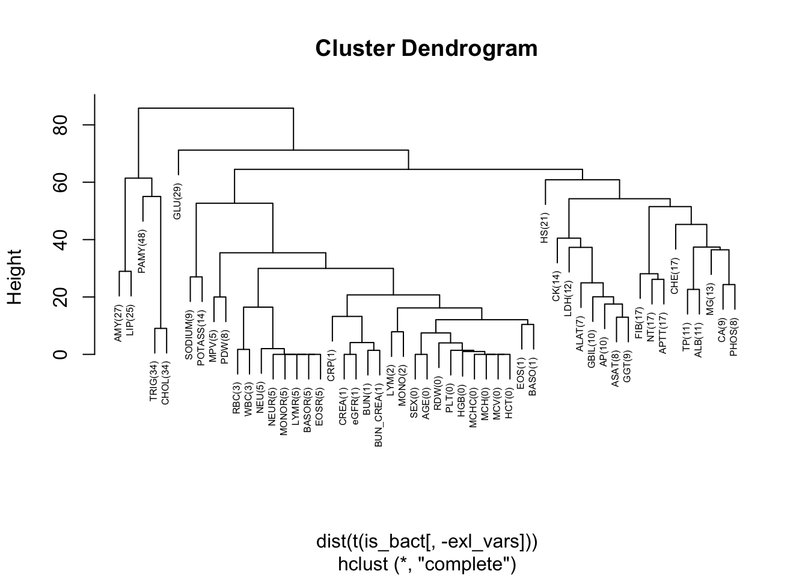

5 Missing data
5.1 Per variable missingness
Number and percentage of missing.
| Variable | Missing (count) | Missing (%) |
|---|---|---|
| PAMY | 7114 | 48.42 |
| TRIG | 5061 | 34.45 |
| CHOL | 5045 | 34.34 |
| GLU | 4192 | 28.53 |
| AMY | 3913 | 26.64 |
| LIP | 3699 | 25.18 |
| HS | 3061 | 20.84 |
| FIB | 2567 | 17.47 |
| APTT | 2549 | 17.35 |
| NT | 2467 | 16.79 |
| CHE | 2447 | 16.66 |
| CK | 2080 | 14.16 |
| POTASS | 2008 | 13.67 |
| MG | 1869 | 12.72 |
| LDH | 1714 | 11.67 |
| ALB | 1676 | 11.41 |
| TP | 1583 | 10.78 |
| GBIL | 1441 | 9.81 |
| AP | 1400 | 9.53 |
| SODIUM | 1282 | 8.73 |
| CA | 1276 | 8.69 |
| GGT | 1262 | 8.59 |
| PHOS | 1242 | 8.45 |
| ASAT | 1154 | 7.86 |
| PDW | 1102 | 7.50 |
| ALAT | 987 | 6.72 |
| BASOR | 732 | 4.98 |
| EOSR | 732 | 4.98 |
| LYMR | 732 | 4.98 |
| MONOR | 732 | 4.98 |
| NEUR | 732 | 4.98 |
| NEU | 728 | 4.96 |
| MPV | 702 | 4.78 |
| WBC | 462 | 3.14 |
| RBC | 461 | 3.14 |
| LYM | 262 | 1.78 |
| MONO | 246 | 1.67 |
| BUN_CREA | 174 | 1.18 |
| BUN | 172 | 1.17 |
| CREA | 159 | 1.08 |
| eGFR | 159 | 1.08 |
| CRP | 155 | 1.06 |
| BASO | 146 | 0.99 |
| EOS | 135 | 0.92 |
| RDW | 56 | 0.38 |
| MCV | 42 | 0.29 |
| HCT | 42 | 0.29 |
| PLT | 42 | 0.29 |
| MCH | 42 | 0.29 |
| MCHC | 42 | 0.29 |
| HGB | 41 | 0.28 |
| SEX | 0 | 0.00 |
| AGE | 0 | 0.00 |
| BloodCulture | 0 | 0.00 |
Investigate for groups of variables:
| Variable | Missing (count) | Missing (%) |
|---|---|---|
| Any_Variable_missing | 10712 | 72.92 |
| Any_remaining_missing | 10587 | 72.06 |
| Any_key_structural_leuko_kidney_acute_missing | 5306 | 36.12 |
| Any_Acute_missing | 3139 | 21.37 |
| Any_Kidney_missing | 2065 | 14.06 |
| Any_key_structural_missing | 898 | 6.11 |
| Any_Leuko_missing | 728 | 4.96 |
| Any_Demographics_missing | 0 | 0.00 |
From this table we learn that as long as we model with only VIPs or with leukocyte-related variables, we can expect less than 10% missing values and this may justify a complete-case analysis. Including also kidney- and acute phase related variables will raise the proportion of missing values to about 36% which leads to a significant drop in power. A multiple imputation may then recover a lot of the information and may in particular be beneficial to keep the power of the (otherwise very complete) VIPs.
5.2 Missingness patterns over variables
First we create a dendogram that shows which variables tend to be missing together:

Furthermore, with variables missing in more than 10% of the cases, we create a heatmap that simultaneously shows the clusters of patients with missing values and the variables:
In this heatmap, we see that CHOL and TRIG are always missing together (lowest hierarchy in dendogram), but there are no further such pairs among any other variables. There is also some evidence that when CHOL and TRIG are missing, also PAMY is missing, although this is not the case for a small proportion of patients. The big white space in the middle of the heatmap represents the approx. 30% of patients with no missing values in those variables.
5.3 Section session info
R version 4.1.2 (2021-11-01)
Platform: x86_64-apple-darwin17.0 (64-bit)
Running under: macOS Big Sur 10.16
Matrix products: default
BLAS: /Library/Frameworks/R.framework/Versions/4.1/Resources/lib/libRblas.0.dylib
LAPACK: /Library/Frameworks/R.framework/Versions/4.1/Resources/lib/libRlapack.dylib
locale:
[1] en_US.UTF-8/en_US.UTF-8/en_US.UTF-8/C/en_US.UTF-8/en_US.UTF-8
attached base packages:
[1] stats graphics grDevices datasets utils methods base
other attached packages:
[1] DT_0.20 kableExtra_1.3.4 gt_0.6.0 naniar_0.6.1
[5] Hmisc_4.6-0 Formula_1.2-4 survival_3.2-13 lattice_0.20-45
[9] forcats_0.5.1 stringr_1.4.0 dplyr_1.0.9 purrr_0.3.4
[13] readr_2.1.1 tidyr_1.2.0 tibble_3.1.7 ggplot2_3.3.6
[17] tidyverse_1.3.1 here_1.0.1
loaded via a namespace (and not attached):
[1] fs_1.5.2 lubridate_1.8.0 webshot_0.5.2
[4] RColorBrewer_1.1-3 httr_1.4.2 rprojroot_2.0.2
[7] tools_4.1.2 backports_1.4.1 utf8_1.2.2
[10] R6_2.5.1 rpart_4.1-15 DBI_1.1.2
[13] colorspace_2.0-3 nnet_7.3-16 withr_2.5.0
[16] tidyselect_1.1.2 gridExtra_2.3 compiler_4.1.2
[19] cli_3.3.0 rvest_1.0.2 htmlTable_2.3.0
[22] xml2_1.3.3 sass_0.4.1 scales_1.2.0
[25] checkmate_2.1.0 commonmark_1.8.0 systemfonts_1.0.3
[28] digest_0.6.29 foreign_0.8-81 rmarkdown_2.11
[31] svglite_2.0.0 base64enc_0.1-3 jpeg_0.1-9
[34] pkgconfig_2.0.3 htmltools_0.5.2 dbplyr_2.1.1
[37] fastmap_1.1.0 htmlwidgets_1.5.4 rlang_1.0.3
[40] readxl_1.3.1 rstudioapi_0.13 generics_0.1.2
[43] jsonlite_1.7.2 magrittr_2.0.3 Matrix_1.3-4
[46] Rcpp_1.0.8.3 munsell_0.5.0 fansi_1.0.3
[49] lifecycle_1.0.1 visdat_0.5.3 stringi_1.7.6
[52] grid_4.1.2 crayon_1.5.1 haven_2.4.3
[55] splines_4.1.2 hms_1.1.1 knitr_1.37
[58] pillar_1.7.0 reprex_2.0.1 glue_1.6.2
[61] evaluate_0.14 latticeExtra_0.6-29 data.table_1.14.2
[64] renv_0.15.5 modelr_0.1.8 png_0.1-7
[67] vctrs_0.4.1 tzdb_0.2.0 cellranger_1.1.0
[70] gtable_0.3.0 assertthat_0.2.1 xfun_0.31
[73] broom_0.8.0 viridisLite_0.4.0 cluster_2.1.2
[76] ellipsis_0.3.2